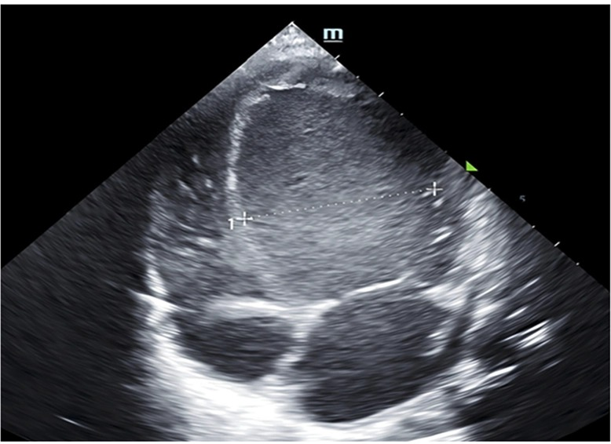
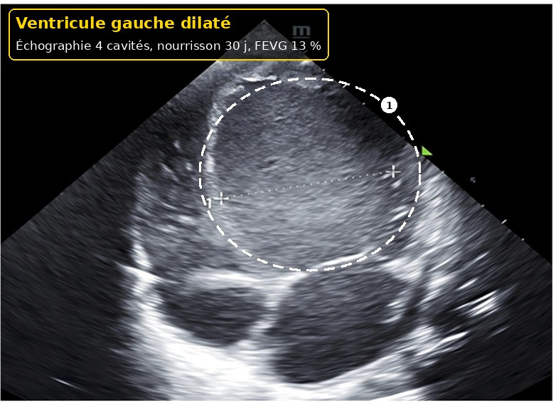
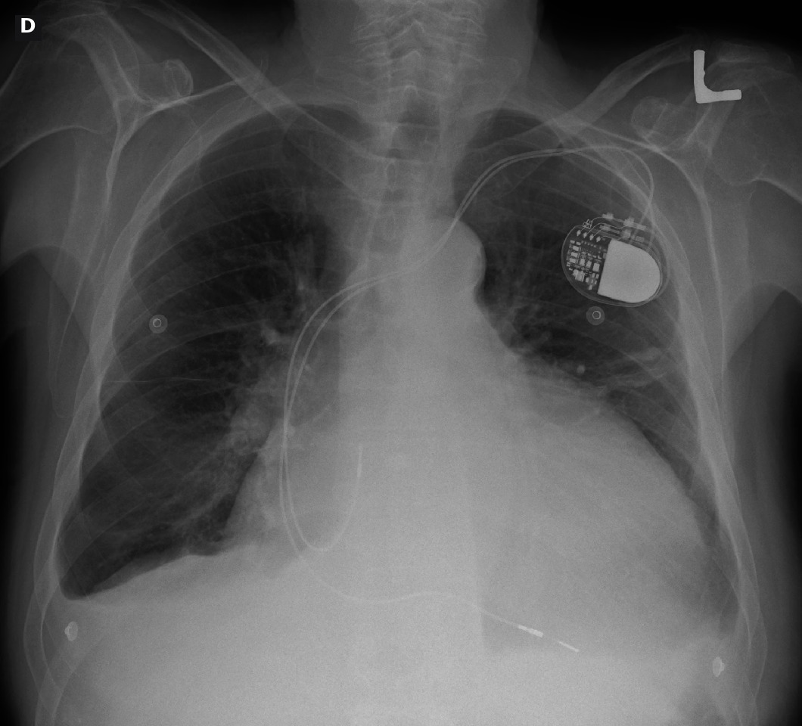
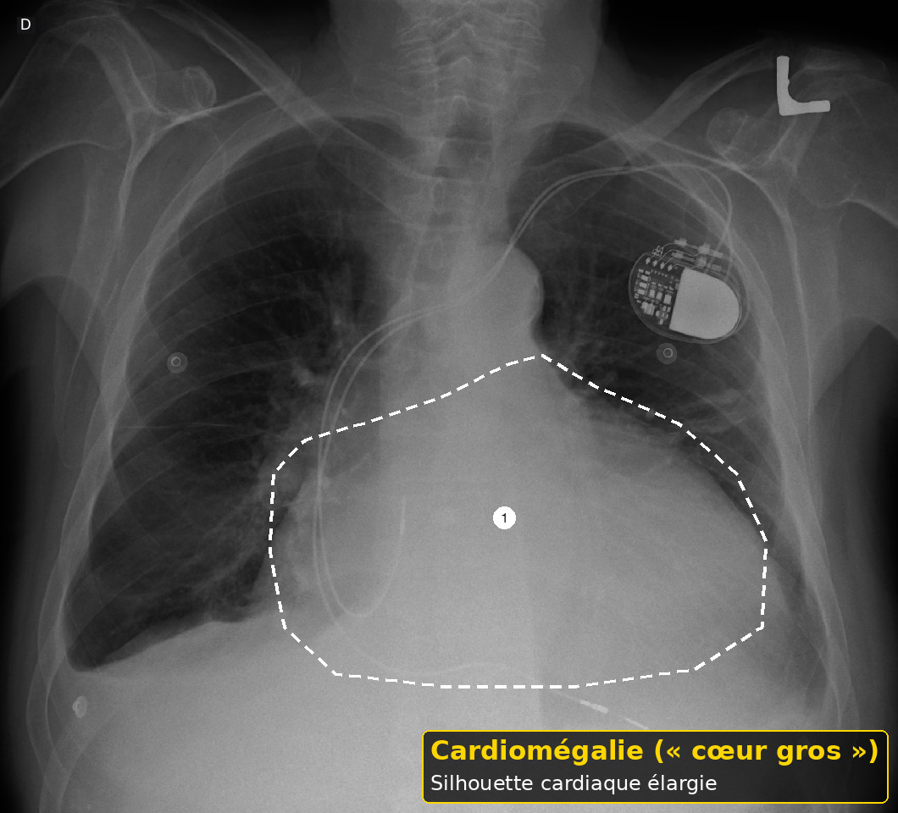

Glaucome congénital et détresse circulatoire
Taille : mesurée par le script du dépôt.
L'essentiel
Glaucome congénital et détresse circulatoire : les critères, les signes d'alarme et les doses lues sont dans les fenêtres.
1. Définition
Le détail est dans la fenêtre.
Deux causes rares font pleurer un nourrisson et menacent la vue ou la circulation : le glaucome congénital et la détresse cardiocirculatoire.15
Le glaucome congénital primaire vient d'un angle immature et d'une pression trop haute.15
Les signes précoces lus en 2017 sont la photophobie, le larmoiement, le blépharospasme et le frottement.15
Un enfant malheureux dans les premières semaines peut arriver ainsi. Ce n'est pas constant.15
La détresse circulatoire donne un cri faible, une couleur grise et une mauvaise perfusion, pas un simple caprice.15
À l'arrivée, pour Glaucome congénital et détresse circulatoire, on ouvre les yeux à la lumière.
À l'arrivée, pour Glaucome congénital et détresse circulatoire, on cite 70 pour cent d'atteinte bilatérale sans en faire une règle du dossier.
À l'arrivée, pour Glaucome congénital et détresse circulatoire, on garde à jeun si la couleur est mauvaise.
Après le déshabillage, pour Glaucome congénital et détresse circulatoire, on ne se fie pas à une pression baissée par l'anesthésie.
Après le déshabillage, pour Glaucome congénital et détresse circulatoire, on appelle le senior.
Avant l'ordonnance, pour Glaucome congénital et détresse circulatoire, on ne donne pas le biberon à un enfant en choc.
Avant l'ordonnance, pour Glaucome congénital et détresse circulatoire, on revoit un larmoiement isolé.
Si le cri persiste, pour Glaucome congénital et détresse circulatoire, on regarde le temps de recoloration.
Si le cri persiste, pour Glaucome congénital et détresse circulatoire, on note l'heure de la dernière tétée.
Avant le retour à domicile, pour Glaucome congénital et détresse circulatoire, on ne dose pas un collyre hypotenseur sans information professionnelle.
Avant le retour à domicile, pour Glaucome congénital et détresse circulatoire, on traite le choc avant l'œil si les deux sont là.
Quand la famille rappelle, pour Glaucome congénital et détresse circulatoire, on adresse le jour même si la cornée est anormale.
Quand la famille rappelle, pour Glaucome congénital et détresse circulatoire, on mesure la saturation si la couleur inquiète.
Dans le compte rendu, pour Glaucome congénital et détresse circulatoire, on cherche la photophobie et le larmoiement.
Dans le compte rendu, pour Glaucome congénital et détresse circulatoire, on ausculte sans exiger un souffle.
Si un signe nouveau apparaît, pour Glaucome congénital et détresse circulatoire, on ouvre les yeux à la lumière.
Si un signe nouveau apparaît, pour Glaucome congénital et détresse circulatoire, on cite 70 pour cent d'atteinte bilatérale sans en faire une règle du dossier.
Si un signe nouveau apparaît, pour Glaucome congénital et détresse circulatoire, on garde à jeun si la couleur est mauvaise.
2. Épidémiologie
Le détail est dans la fenêtre.
Le texte européen de 2017 situe la fréquence autour de 1 naissance sur 12 000 à 18 000 chez les personnes d'ascendance européenne.15
Elle est plus haute si les parents sont apparentés.15
L'atteinte est bilatérale dans 70 pour cent des cas, et plus fréquente chez les garçons, 65 pour cent.15
Ce ne sont pas des taux suisses de consultation pour pleurs.15
La cardiopathie ducto-dépendante est rare. Son jour précis de révélation n'est pas archivé ici.15
À l'arrivée, pour Glaucome congénital et détresse circulatoire, on compare la taille des deux cornées.
À l'arrivée, pour Glaucome congénital et détresse circulatoire, on protège de la lumière forte en attendant.
À l'arrivée, pour Glaucome congénital et détresse circulatoire, on relit la 4e et la 5e édition avant d'affirmer un chiffre.
Après le déshabillage, pour Glaucome congénital et détresse circulatoire, on cite 10,5 mm et 12 mm comme repères lus en 2017.
Après le déshabillage, pour Glaucome congénital et détresse circulatoire, on prévient les parents du transfert.
Avant l'ordonnance, pour Glaucome congénital et détresse circulatoire, on transfert là où l'échographie cardiaque et la réanimation existent.
Avant l'ordonnance, pour Glaucome congénital et détresse circulatoire, on n'écrit pas de millilitre de remplissage inventé.
Si le cri persiste, pour Glaucome congénital et détresse circulatoire, on oxygène et on perfuse un enfant gris.
Si le cri persiste, pour Glaucome congénital et détresse circulatoire, on distingue une voie lacrymale simple d'un glaucome.
Avant le retour à domicile, pour Glaucome congénital et détresse circulatoire, on palpe les fémorales.
Avant le retour à domicile, pour Glaucome congénital et détresse circulatoire, on ne promet pas la vision.
Quand la famille rappelle, pour Glaucome congénital et détresse circulatoire, on rappelle que la chirurgie est le premier traitement lu en 2021.
Quand la famille rappelle, pour Glaucome congénital et détresse circulatoire, on n'invente pas le jour de fermeture du canal.
Dans le compte rendu, pour Glaucome congénital et détresse circulatoire, on n'appelle pas conjonctivite un œil trouble et grand.
Dans le compte rendu, pour Glaucome congénital et détresse circulatoire, on palpe le foie.
Si un signe nouveau apparaît, pour Glaucome congénital et détresse circulatoire, on compare la taille des deux cornées.
Si un signe nouveau apparaît, pour Glaucome congénital et détresse circulatoire, on protège de la lumière forte en attendant.
Si un signe nouveau apparaît, pour Glaucome congénital et détresse circulatoire, on relit la 4e et la 5e édition avant d'affirmer un chiffre.
3. Physiopathologie
Le détail est dans la fenêtre.
L'humeur aqueuse sort mal. La pression monte. L'œil du nourrisson grandit.15
La cornée se trouble et peut se déchirer dans sa membrane profonde, stries de Haab.15
Le diamètre cornéen habituel lu dépasse 10,5 mm à la naissance et 12 mm dans la première année.15
La longueur axiale lue dépasse 20 mm à la naissance ou 22 mm après 1 an.15
Une cardiopathie qui dépend du canal se révèle quand celui-ci se ferme, par choc et fatigue alimentaire.15
À l'arrivée, pour Glaucome congénital et détresse circulatoire, on cherche la photophobie et le larmoiement.
À l'arrivée, pour Glaucome congénital et détresse circulatoire, on ausculte sans exiger un souffle.
Après le déshabillage, pour Glaucome congénital et détresse circulatoire, on ouvre les yeux à la lumière.
Après le déshabillage, pour Glaucome congénital et détresse circulatoire, on cite 70 pour cent d'atteinte bilatérale sans en faire une règle du dossier.
Après le déshabillage, pour Glaucome congénital et détresse circulatoire, on garde à jeun si la couleur est mauvaise.
Avant l'ordonnance, pour Glaucome congénital et détresse circulatoire, on ne se fie pas à une pression baissée par l'anesthésie.
Avant l'ordonnance, pour Glaucome congénital et détresse circulatoire, on appelle le senior.
Si le cri persiste, pour Glaucome congénital et détresse circulatoire, on ne donne pas le biberon à un enfant en choc.
Si le cri persiste, pour Glaucome congénital et détresse circulatoire, on revoit un larmoiement isolé.
Avant le retour à domicile, pour Glaucome congénital et détresse circulatoire, on regarde le temps de recoloration.
Avant le retour à domicile, pour Glaucome congénital et détresse circulatoire, on note l'heure de la dernière tétée.
Quand la famille rappelle, pour Glaucome congénital et détresse circulatoire, on ne dose pas un collyre hypotenseur sans information professionnelle.
Quand la famille rappelle, pour Glaucome congénital et détresse circulatoire, on traite le choc avant l'œil si les deux sont là.
Dans le compte rendu, pour Glaucome congénital et détresse circulatoire, on adresse le jour même si la cornée est anormale.
Dans le compte rendu, pour Glaucome congénital et détresse circulatoire, on mesure la saturation si la couleur inquiète.
Si un signe nouveau apparaît, pour Glaucome congénital et détresse circulatoire, on cherche la photophobie et le larmoiement.
Si un signe nouveau apparaît, pour Glaucome congénital et détresse circulatoire, on ausculte sans exiger un souffle.
À la visite de contrôle, pour Glaucome congénital et détresse circulatoire, on ouvre les yeux à la lumière.
4. Démarche diagnostique
Le détail est dans la fenêtre.
On demande la lumière, les larmes, et si un œil semble plus grand.15
On compare les deux fentes palpébrales.15
On palpe les pouls fémoraux, on regarde le temps de recoloration et la respiration.15
On mesure la saturation si la couleur inquiète.15
On n'attribue pas une photophobie à une colique.15
À l'arrivée, pour Glaucome congénital et détresse circulatoire, on n'appelle pas conjonctivite un œil trouble et grand.
À l'arrivée, pour Glaucome congénital et détresse circulatoire, on palpe le foie.
Après le déshabillage, pour Glaucome congénital et détresse circulatoire, on compare la taille des deux cornées.
Après le déshabillage, pour Glaucome congénital et détresse circulatoire, on protège de la lumière forte en attendant.
Après le déshabillage, pour Glaucome congénital et détresse circulatoire, on relit la 4e et la 5e édition avant d'affirmer un chiffre.
Avant l'ordonnance, pour Glaucome congénital et détresse circulatoire, on cite 10,5 mm et 12 mm comme repères lus en 2017.
Avant l'ordonnance, pour Glaucome congénital et détresse circulatoire, on prévient les parents du transfert.
Si le cri persiste, pour Glaucome congénital et détresse circulatoire, on transfert là où l'échographie cardiaque et la réanimation existent.
Si le cri persiste, pour Glaucome congénital et détresse circulatoire, on n'écrit pas de millilitre de remplissage inventé.
Avant le retour à domicile, pour Glaucome congénital et détresse circulatoire, on oxygène et on perfuse un enfant gris.
Avant le retour à domicile, pour Glaucome congénital et détresse circulatoire, on distingue une voie lacrymale simple d'un glaucome.
Quand la famille rappelle, pour Glaucome congénital et détresse circulatoire, on palpe les fémorales.
Quand la famille rappelle, pour Glaucome congénital et détresse circulatoire, on ne promet pas la vision.
Dans le compte rendu, pour Glaucome congénital et détresse circulatoire, on rappelle que la chirurgie est le premier traitement lu en 2021.
Dans le compte rendu, pour Glaucome congénital et détresse circulatoire, on n'invente pas le jour de fermeture du canal.
Si un signe nouveau apparaît, pour Glaucome congénital et détresse circulatoire, on n'appelle pas conjonctivite un œil trouble et grand.
Si un signe nouveau apparaît, pour Glaucome congénital et détresse circulatoire, on palpe le foie.
À la visite de contrôle, pour Glaucome congénital et détresse circulatoire, on compare la taille des deux cornées.
5. Anamnèse et drapeaux rouges
Le détail est dans la fenêtre.
Cornée trouble, œil grand, photophobie : avis ophtalmologique urgent.15
Gris, pouls fémoraux absents, hépatomégalie, cri faible : filière cardiologique et réanimation.15
La pression oculaire sous anesthésie est souvent abaissée par les médicaments. Elle ne confirme seule que si elle est extrêmement élevée, avec des signes cornéens.15
On ne rassure pas sur une pression normale mesurée sous sédation.15
Une fontanelle bombée oriente plutôt vers la pression intracrânienne, déjà citée avec le reflux et l'infection.15
À l'arrivée, pour Glaucome congénital et détresse circulatoire, on adresse le jour même si la cornée est anormale.
À l'arrivée, pour Glaucome congénital et détresse circulatoire, on mesure la saturation si la couleur inquiète.
Après le déshabillage, pour Glaucome congénital et détresse circulatoire, on cherche la photophobie et le larmoiement.
Après le déshabillage, pour Glaucome congénital et détresse circulatoire, on ausculte sans exiger un souffle.
Avant l'ordonnance, pour Glaucome congénital et détresse circulatoire, on ouvre les yeux à la lumière.
Avant l'ordonnance, pour Glaucome congénital et détresse circulatoire, on cite 70 pour cent d'atteinte bilatérale sans en faire une règle du dossier.
Avant l'ordonnance, pour Glaucome congénital et détresse circulatoire, on garde à jeun si la couleur est mauvaise.
Si le cri persiste, pour Glaucome congénital et détresse circulatoire, on ne se fie pas à une pression baissée par l'anesthésie.
Si le cri persiste, pour Glaucome congénital et détresse circulatoire, on appelle le senior.
Avant le retour à domicile, pour Glaucome congénital et détresse circulatoire, on ne donne pas le biberon à un enfant en choc.
Avant le retour à domicile, pour Glaucome congénital et détresse circulatoire, on revoit un larmoiement isolé.
Quand la famille rappelle, pour Glaucome congénital et détresse circulatoire, on regarde le temps de recoloration.
Quand la famille rappelle, pour Glaucome congénital et détresse circulatoire, on note l'heure de la dernière tétée.
Dans le compte rendu, pour Glaucome congénital et détresse circulatoire, on ne dose pas un collyre hypotenseur sans information professionnelle.
Dans le compte rendu, pour Glaucome congénital et détresse circulatoire, on traite le choc avant l'œil si les deux sont là.
Si un signe nouveau apparaît, pour Glaucome congénital et détresse circulatoire, on adresse le jour même si la cornée est anormale.
Si un signe nouveau apparaît, pour Glaucome congénital et détresse circulatoire, on mesure la saturation si la couleur inquiète.
À la visite de contrôle, pour Glaucome congénital et détresse circulatoire, on cherche la photophobie et le larmoiement.
6. Examen physique
Le détail est dans la fenêtre.
On ouvre les yeux en douceur, à la lumière.15
On cherche l'œdème de cornée et la différence de taille.15
On ausculte, on palpe le foie et les fémorales, on regarde les orteils pour le temps de recoloration.15
Un souffle n'est ni nécessaire ni suffisant.15
On prend la tension aux quatre membres seulement si l'équipe sait le faire sans retarder le transfert.15
À l'arrivée, pour Glaucome congénital et détresse circulatoire, on rappelle que la chirurgie est le premier traitement lu en 2021.
À l'arrivée, pour Glaucome congénital et détresse circulatoire, on n'invente pas le jour de fermeture du canal.
Après le déshabillage, pour Glaucome congénital et détresse circulatoire, on n'appelle pas conjonctivite un œil trouble et grand.
Après le déshabillage, pour Glaucome congénital et détresse circulatoire, on palpe le foie.
Avant l'ordonnance, pour Glaucome congénital et détresse circulatoire, on compare la taille des deux cornées.
Avant l'ordonnance, pour Glaucome congénital et détresse circulatoire, on protège de la lumière forte en attendant.
Avant l'ordonnance, pour Glaucome congénital et détresse circulatoire, on relit la 4e et la 5e édition avant d'affirmer un chiffre.
Si le cri persiste, pour Glaucome congénital et détresse circulatoire, on cite 10,5 mm et 12 mm comme repères lus en 2017.
Si le cri persiste, pour Glaucome congénital et détresse circulatoire, on prévient les parents du transfert.
Avant le retour à domicile, pour Glaucome congénital et détresse circulatoire, on transfert là où l'échographie cardiaque et la réanimation existent.
Avant le retour à domicile, pour Glaucome congénital et détresse circulatoire, on n'écrit pas de millilitre de remplissage inventé.
Quand la famille rappelle, pour Glaucome congénital et détresse circulatoire, on oxygène et on perfuse un enfant gris.
Quand la famille rappelle, pour Glaucome congénital et détresse circulatoire, on distingue une voie lacrymale simple d'un glaucome.
Dans le compte rendu, pour Glaucome congénital et détresse circulatoire, on palpe les fémorales.
Dans le compte rendu, pour Glaucome congénital et détresse circulatoire, on ne promet pas la vision.
Si un signe nouveau apparaît, pour Glaucome congénital et détresse circulatoire, on rappelle que la chirurgie est le premier traitement lu en 2021.
Si un signe nouveau apparaît, pour Glaucome congénital et détresse circulatoire, on n'invente pas le jour de fermeture du canal.
À la visite de contrôle, pour Glaucome congénital et détresse circulatoire, on n'appelle pas conjonctivite un œil trouble et grand.
7. Approche syndromique
Le détail est dans la fenêtre.
Larmoiement isolé avec cornée claire et œil de taille normale : d'abord une voie lacrymale, tout en revoyant.15
Larmoiement plus photophobie plus grande cornée : glaucome.15
Cri à la lumière plus abrasion fluorescéine positive et cornée de taille normale : fichier de la lésion locale.15
Pâleur et temps de recoloration long : choc, pas glaucome.15
Les deux filières se croisent si l'enfant est gris et photophobe. On traite le choc d'abord.15
À l'arrivée, pour Glaucome congénital et détresse circulatoire, on ne dose pas un collyre hypotenseur sans information professionnelle.
À l'arrivée, pour Glaucome congénital et détresse circulatoire, on traite le choc avant l'œil si les deux sont là.
Après le déshabillage, pour Glaucome congénital et détresse circulatoire, on adresse le jour même si la cornée est anormale.
Après le déshabillage, pour Glaucome congénital et détresse circulatoire, on mesure la saturation si la couleur inquiète.
Avant l'ordonnance, pour Glaucome congénital et détresse circulatoire, on cherche la photophobie et le larmoiement.
Avant l'ordonnance, pour Glaucome congénital et détresse circulatoire, on ausculte sans exiger un souffle.
Si le cri persiste, pour Glaucome congénital et détresse circulatoire, on ouvre les yeux à la lumière.
Si le cri persiste, pour Glaucome congénital et détresse circulatoire, on cite 70 pour cent d'atteinte bilatérale sans en faire une règle du dossier.
Si le cri persiste, pour Glaucome congénital et détresse circulatoire, on garde à jeun si la couleur est mauvaise.
Avant le retour à domicile, pour Glaucome congénital et détresse circulatoire, on ne se fie pas à une pression baissée par l'anesthésie.
Avant le retour à domicile, pour Glaucome congénital et détresse circulatoire, on appelle le senior.
Quand la famille rappelle, pour Glaucome congénital et détresse circulatoire, on ne donne pas le biberon à un enfant en choc.
Quand la famille rappelle, pour Glaucome congénital et détresse circulatoire, on revoit un larmoiement isolé.
Dans le compte rendu, pour Glaucome congénital et détresse circulatoire, on regarde le temps de recoloration.
Dans le compte rendu, pour Glaucome congénital et détresse circulatoire, on note l'heure de la dernière tétée.
Si un signe nouveau apparaît, pour Glaucome congénital et détresse circulatoire, on ne dose pas un collyre hypotenseur sans information professionnelle.
Si un signe nouveau apparaît, pour Glaucome congénital et détresse circulatoire, on traite le choc avant l'œil si les deux sont là.
À la visite de contrôle, pour Glaucome congénital et détresse circulatoire, on adresse le jour même si la cornée est anormale.
8. Diagnostic positif
Le détail est dans la fenêtre.
Le glaucome se confirme par l'ophtalmologiste, sur la cornée, la pression interprétée et le nerf.15
La 5e édition de 2021 indique une chirurgie initiale dans presque tous les cas de glaucome congénital primaire.15
Le médicament est un pont, pas le traitement de fond.15
La détresse circulatoire se confirme par la clinique et l', sans retarder le transfert.15


Reconnaître. Coupe apicale des 4 cavités : ventricule gauche très dilaté et globuleux ; les repères de l'auteur mesurent son diamètre.
Nourrisson de 30 jours atteint d'une cardiomyopathie dilatée ; l'article donne une fraction d'éjection du ventricule gauche de 13 % (figure de l'article).
Pièges. Sur une image fixe, on voit la dilatation ; la mauvaise contraction se juge sur la boucle en mouvement et sa mesure. L'échocardiographie confirme ; elle ne retarde pas le transfert.
Image : Wang Y, Liang L et al. (Frontiers in Genetics, 2026, figure 1A) — Creative Commons Attribution 4.0 — article en libre accès, consulté le 2026-11-01. Version annotée (pointillés, numéros, cartouche) : œuvre dérivée sous la même licence.
On n'attend pas une pression chiffrée pour adresser un œil trouble.15
À l'arrivée, pour Glaucome congénital et détresse circulatoire, on palpe les fémorales.
À l'arrivée, pour Glaucome congénital et détresse circulatoire, on ne promet pas la vision.
Après le déshabillage, pour Glaucome congénital et détresse circulatoire, on rappelle que la chirurgie est le premier traitement lu en 2021.
Après le déshabillage, pour Glaucome congénital et détresse circulatoire, on n'invente pas le jour de fermeture du canal.
Avant l'ordonnance, pour Glaucome congénital et détresse circulatoire, on n'appelle pas conjonctivite un œil trouble et grand.
Avant l'ordonnance, pour Glaucome congénital et détresse circulatoire, on palpe le foie.
Si le cri persiste, pour Glaucome congénital et détresse circulatoire, on compare la taille des deux cornées.
Si le cri persiste, pour Glaucome congénital et détresse circulatoire, on protège de la lumière forte en attendant.
Si le cri persiste, pour Glaucome congénital et détresse circulatoire, on relit la 4e et la 5e édition avant d'affirmer un chiffre.
Avant le retour à domicile, pour Glaucome congénital et détresse circulatoire, on cite 10,5 mm et 12 mm comme repères lus en 2017.
Avant le retour à domicile, pour Glaucome congénital et détresse circulatoire, on prévient les parents du transfert.
Quand la famille rappelle, pour Glaucome congénital et détresse circulatoire, on transfert là où l'échographie cardiaque et la réanimation existent.
Quand la famille rappelle, pour Glaucome congénital et détresse circulatoire, on n'écrit pas de millilitre de remplissage inventé.
Dans le compte rendu, pour Glaucome congénital et détresse circulatoire, on oxygène et on perfuse un enfant gris.
Dans le compte rendu, pour Glaucome congénital et détresse circulatoire, on distingue une voie lacrymale simple d'un glaucome.
Si un signe nouveau apparaît, pour Glaucome congénital et détresse circulatoire, on palpe les fémorales.
Si un signe nouveau apparaît, pour Glaucome congénital et détresse circulatoire, on ne promet pas la vision.
À la visite de contrôle, pour Glaucome congénital et détresse circulatoire, on rappelle que la chirurgie est le premier traitement lu en 2021.
9. Examens complémentaires
Le détail est dans la fenêtre.
On adresse, on ne demande pas une batterie d'examens de ville.15
L'échographie cardiaque se fait au lieu capable de réanimer.15
Le fond d'œil et la mesure sous anesthésie appartiennent à l'équipe d'ophtalmologie.15
Une radiographie de thorax peut montrer un . Elle ne remplace pas l'échographie.15


Reconnaître. Silhouette cardiaque élargie : le cœur occupe une grande part de la largeur du thorax. Le boîtier en haut à droite de l'image est un stimulateur cardiaque.
Radiographie de thorax de face : très gros cœur et stimulateur cardiaque.
Pièges. Ne pas juger la taille du cœur sur un cliché couché ou de dos (incidence antéro-postérieure) sans réserve. La radiographie ne remplace pas l'échocardiographie.
Image : James Heilman, MD — Creative Commons Attribution – Partage dans les mêmes conditions 3.0 — Wikimedia Commons, consulté le 2026-11-01. Version annotée (pointillés, numéros, cartouche) : œuvre dérivée sous la même licence. Cliché d'adulte, en attendant un cliché pédiatrique sous licence libre.

On note l'heure de la dernière tétée et la diurèse.15
À l'arrivée, pour Glaucome congénital et détresse circulatoire, on regarde le temps de recoloration.
À l'arrivée, pour Glaucome congénital et détresse circulatoire, on note l'heure de la dernière tétée.
Après le déshabillage, pour Glaucome congénital et détresse circulatoire, on ne dose pas un collyre hypotenseur sans information professionnelle.
Après le déshabillage, pour Glaucome congénital et détresse circulatoire, on traite le choc avant l'œil si les deux sont là.
Avant l'ordonnance, pour Glaucome congénital et détresse circulatoire, on adresse le jour même si la cornée est anormale.
Avant l'ordonnance, pour Glaucome congénital et détresse circulatoire, on mesure la saturation si la couleur inquiète.
Si le cri persiste, pour Glaucome congénital et détresse circulatoire, on cherche la photophobie et le larmoiement.
Si le cri persiste, pour Glaucome congénital et détresse circulatoire, on ausculte sans exiger un souffle.
Avant le retour à domicile, pour Glaucome congénital et détresse circulatoire, on ouvre les yeux à la lumière.
Avant le retour à domicile, pour Glaucome congénital et détresse circulatoire, on cite 70 pour cent d'atteinte bilatérale sans en faire une règle du dossier.
Avant le retour à domicile, pour Glaucome congénital et détresse circulatoire, on garde à jeun si la couleur est mauvaise.
Quand la famille rappelle, pour Glaucome congénital et détresse circulatoire, on ne se fie pas à une pression baissée par l'anesthésie.
Quand la famille rappelle, pour Glaucome congénital et détresse circulatoire, on appelle le senior.
Dans le compte rendu, pour Glaucome congénital et détresse circulatoire, on ne donne pas le biberon à un enfant en choc.
Dans le compte rendu, pour Glaucome congénital et détresse circulatoire, on revoit un larmoiement isolé.
Si un signe nouveau apparaît, pour Glaucome congénital et détresse circulatoire, on regarde le temps de recoloration.
Si un signe nouveau apparaît, pour Glaucome congénital et détresse circulatoire, on note l'heure de la dernière tétée.
À la visite de contrôle, pour Glaucome congénital et détresse circulatoire, on ne dose pas un collyre hypotenseur sans information professionnelle.
10. Arbre décisionnel
Le détail est dans la fenêtre.
Schéma interactif
Le schéma sépare l'œil, le pouls, et ce qui peut attendre.15
Œil trouble : ophtalmologie le jour même.15
Pouls ou couleur anormaux : réanimation et transfert.15
Examen normal : on retourne aux causes fréquentes.15
On n'inverse pas cet ordre.15
À l'arrivée, pour Glaucome congénital et détresse circulatoire, on oxygène et on perfuse un enfant gris.
À l'arrivée, pour Glaucome congénital et détresse circulatoire, on distingue une voie lacrymale simple d'un glaucome.
Après le déshabillage, pour Glaucome congénital et détresse circulatoire, on palpe les fémorales.
Après le déshabillage, pour Glaucome congénital et détresse circulatoire, on ne promet pas la vision.
Avant l'ordonnance, pour Glaucome congénital et détresse circulatoire, on rappelle que la chirurgie est le premier traitement lu en 2021.
Avant l'ordonnance, pour Glaucome congénital et détresse circulatoire, on n'invente pas le jour de fermeture du canal.
Si le cri persiste, pour Glaucome congénital et détresse circulatoire, on n'appelle pas conjonctivite un œil trouble et grand.
Si le cri persiste, pour Glaucome congénital et détresse circulatoire, on palpe le foie.
Avant le retour à domicile, pour Glaucome congénital et détresse circulatoire, on compare la taille des deux cornées.
Avant le retour à domicile, pour Glaucome congénital et détresse circulatoire, on protège de la lumière forte en attendant.
Avant le retour à domicile, pour Glaucome congénital et détresse circulatoire, on relit la 4e et la 5e édition avant d'affirmer un chiffre.
Quand la famille rappelle, pour Glaucome congénital et détresse circulatoire, on cite 10,5 mm et 12 mm comme repères lus en 2017.
Quand la famille rappelle, pour Glaucome congénital et détresse circulatoire, on prévient les parents du transfert.
Dans le compte rendu, pour Glaucome congénital et détresse circulatoire, on transfert là où l'échographie cardiaque et la réanimation existent.
Dans le compte rendu, pour Glaucome congénital et détresse circulatoire, on n'écrit pas de millilitre de remplissage inventé.
Si un signe nouveau apparaît, pour Glaucome congénital et détresse circulatoire, on oxygène et on perfuse un enfant gris.
Si un signe nouveau apparaît, pour Glaucome congénital et détresse circulatoire, on distingue une voie lacrymale simple d'un glaucome.
À la visite de contrôle, pour Glaucome congénital et détresse circulatoire, on palpe les fémorales.
11. Prise en charge
Le détail est dans la fenêtre.
On protège les yeux de la lumière forte en attendant l'avis.15
Aucun collyre hypotenseur n'est dosé ici, car aucune information professionnelle de ce LOT ne le fait.15
Le choc se remplit et s'oxygène selon la réanimation pédiatrique. On n'invente pas un millilitre.15
La prostaglandine du canal, si elle est indiquée, suit l'information professionnelle et l'équipe de cardiologie. La dose n'est pas recopiée dans ce LOT.15
On ne donne pas un inhibiteur d'acide à un enfant gris.15
À l'arrivée, pour Glaucome congénital et détresse circulatoire, on ne donne pas le biberon à un enfant en choc.
À l'arrivée, pour Glaucome congénital et détresse circulatoire, on revoit un larmoiement isolé.
Après le déshabillage, pour Glaucome congénital et détresse circulatoire, on regarde le temps de recoloration.
Après le déshabillage, pour Glaucome congénital et détresse circulatoire, on note l'heure de la dernière tétée.
Avant l'ordonnance, pour Glaucome congénital et détresse circulatoire, on ne dose pas un collyre hypotenseur sans information professionnelle.
Avant l'ordonnance, pour Glaucome congénital et détresse circulatoire, on traite le choc avant l'œil si les deux sont là.
Si le cri persiste, pour Glaucome congénital et détresse circulatoire, on adresse le jour même si la cornée est anormale.
Si le cri persiste, pour Glaucome congénital et détresse circulatoire, on mesure la saturation si la couleur inquiète.
Avant le retour à domicile, pour Glaucome congénital et détresse circulatoire, on cherche la photophobie et le larmoiement.
Avant le retour à domicile, pour Glaucome congénital et détresse circulatoire, on ausculte sans exiger un souffle.
Quand la famille rappelle, pour Glaucome congénital et détresse circulatoire, on ouvre les yeux à la lumière.
Quand la famille rappelle, pour Glaucome congénital et détresse circulatoire, on cite 70 pour cent d'atteinte bilatérale sans en faire une règle du dossier.
Quand la famille rappelle, pour Glaucome congénital et détresse circulatoire, on garde à jeun si la couleur est mauvaise.
Dans le compte rendu, pour Glaucome congénital et détresse circulatoire, on ne se fie pas à une pression baissée par l'anesthésie.
Dans le compte rendu, pour Glaucome congénital et détresse circulatoire, on appelle le senior.
Si un signe nouveau apparaît, pour Glaucome congénital et détresse circulatoire, on ne donne pas le biberon à un enfant en choc.
Si un signe nouveau apparaît, pour Glaucome congénital et détresse circulatoire, on revoit un larmoiement isolé.
À la visite de contrôle, pour Glaucome congénital et détresse circulatoire, on regarde le temps de recoloration.
12. Prévention
Le détail est dans la fenêtre.
On regarde les yeux à chaque examen de nourrisson qui pleure.15
On palpe les fémorales au moins une fois dans la première semaine, et de nouveau si la couleur change.15
On explique aux parents qu'un œil trouble ne se surveille pas jusqu'au lendemain lointain.15
La chirurgie précoce vise à protéger la vue. Le texte de 2021 la place en premier.15
On ne promet pas une vision normale.15
À l'arrivée, pour Glaucome congénital et détresse circulatoire, on transfert là où l'échographie cardiaque et la réanimation existent.
À l'arrivée, pour Glaucome congénital et détresse circulatoire, on n'écrit pas de millilitre de remplissage inventé.
Après le déshabillage, pour Glaucome congénital et détresse circulatoire, on oxygène et on perfuse un enfant gris.
Après le déshabillage, pour Glaucome congénital et détresse circulatoire, on distingue une voie lacrymale simple d'un glaucome.
Avant l'ordonnance, pour Glaucome congénital et détresse circulatoire, on palpe les fémorales.
Avant l'ordonnance, pour Glaucome congénital et détresse circulatoire, on ne promet pas la vision.
Si le cri persiste, pour Glaucome congénital et détresse circulatoire, on rappelle que la chirurgie est le premier traitement lu en 2021.
Si le cri persiste, pour Glaucome congénital et détresse circulatoire, on n'invente pas le jour de fermeture du canal.
Avant le retour à domicile, pour Glaucome congénital et détresse circulatoire, on n'appelle pas conjonctivite un œil trouble et grand.
Avant le retour à domicile, pour Glaucome congénital et détresse circulatoire, on palpe le foie.
Quand la famille rappelle, pour Glaucome congénital et détresse circulatoire, on compare la taille des deux cornées.
Quand la famille rappelle, pour Glaucome congénital et détresse circulatoire, on protège de la lumière forte en attendant.
Quand la famille rappelle, pour Glaucome congénital et détresse circulatoire, on relit la 4e et la 5e édition avant d'affirmer un chiffre.
Dans le compte rendu, pour Glaucome congénital et détresse circulatoire, on cite 10,5 mm et 12 mm comme repères lus en 2017.
Dans le compte rendu, pour Glaucome congénital et détresse circulatoire, on prévient les parents du transfert.
Si un signe nouveau apparaît, pour Glaucome congénital et détresse circulatoire, on transfert là où l'échographie cardiaque et la réanimation existent.
Si un signe nouveau apparaît, pour Glaucome congénital et détresse circulatoire, on n'écrit pas de millilitre de remplissage inventé.
À la visite de contrôle, pour Glaucome congénital et détresse circulatoire, on oxygène et on perfuse un enfant gris.
13. Points clés
Le détail est dans la fenêtre.
Photophobie, larmes, blépharospasme, œil grand.15
Cornée souvent au-dessus de 10,5 mm à la naissance.15
Chirurgie d'abord, médicament en pont.15
Enfant gris et fémorales absentes : circulation, pas colique.15
Pression sous sédation facile à mal lire.15
À l'arrivée, pour Glaucome congénital et détresse circulatoire, on ne se fie pas à une pression baissée par l'anesthésie.
À l'arrivée, pour Glaucome congénital et détresse circulatoire, on appelle le senior.
Après le déshabillage, pour Glaucome congénital et détresse circulatoire, on ne donne pas le biberon à un enfant en choc.
Après le déshabillage, pour Glaucome congénital et détresse circulatoire, on revoit un larmoiement isolé.
Avant l'ordonnance, pour Glaucome congénital et détresse circulatoire, on regarde le temps de recoloration.
Avant l'ordonnance, pour Glaucome congénital et détresse circulatoire, on note l'heure de la dernière tétée.
Si le cri persiste, pour Glaucome congénital et détresse circulatoire, on ne dose pas un collyre hypotenseur sans information professionnelle.
Si le cri persiste, pour Glaucome congénital et détresse circulatoire, on traite le choc avant l'œil si les deux sont là.
Avant le retour à domicile, pour Glaucome congénital et détresse circulatoire, on adresse le jour même si la cornée est anormale.
Avant le retour à domicile, pour Glaucome congénital et détresse circulatoire, on mesure la saturation si la couleur inquiète.
Quand la famille rappelle, pour Glaucome congénital et détresse circulatoire, on cherche la photophobie et le larmoiement.
Quand la famille rappelle, pour Glaucome congénital et détresse circulatoire, on ausculte sans exiger un souffle.
Dans le compte rendu, pour Glaucome congénital et détresse circulatoire, on ouvre les yeux à la lumière.
Dans le compte rendu, pour Glaucome congénital et détresse circulatoire, on cite 70 pour cent d'atteinte bilatérale sans en faire une règle du dossier.
Dans le compte rendu, pour Glaucome congénital et détresse circulatoire, on garde à jeun si la couleur est mauvaise.
Si un signe nouveau apparaît, pour Glaucome congénital et détresse circulatoire, on ne se fie pas à une pression baissée par l'anesthésie.
Si un signe nouveau apparaît, pour Glaucome congénital et détresse circulatoire, on appelle le senior.
14. Pièges et cas
Le détail est dans la fenêtre.
Piège : appeler conjonctivite un œil dont la cornée est grande et trouble.15
Piège : croire normale une pression baissée par l'anesthésie.15
Piège : donner un biberon à un enfant en choc.15
Cas corrigé. À 3 semaines, pleurs à la lumière, deux cornées troubles. On adresse le jour même.15
On n'attend pas le contrôle du mois.15
Si en plus le temps de recoloration est long, la réanimation passe avant le transport assis.15
À l'arrivée, pour Glaucome congénital et détresse circulatoire, on cite 10,5 mm et 12 mm comme repères lus en 2017.
À l'arrivée, pour Glaucome congénital et détresse circulatoire, on prévient les parents du transfert.
Après le déshabillage, pour Glaucome congénital et détresse circulatoire, on transfert là où l'échographie cardiaque et la réanimation existent.
Après le déshabillage, pour Glaucome congénital et détresse circulatoire, on n'écrit pas de millilitre de remplissage inventé.
Avant l'ordonnance, pour Glaucome congénital et détresse circulatoire, on oxygène et on perfuse un enfant gris.
Avant l'ordonnance, pour Glaucome congénital et détresse circulatoire, on distingue une voie lacrymale simple d'un glaucome.
Si le cri persiste, pour Glaucome congénital et détresse circulatoire, on palpe les fémorales.
Si le cri persiste, pour Glaucome congénital et détresse circulatoire, on ne promet pas la vision.
Avant le retour à domicile, pour Glaucome congénital et détresse circulatoire, on rappelle que la chirurgie est le premier traitement lu en 2021.
Avant le retour à domicile, pour Glaucome congénital et détresse circulatoire, on n'invente pas le jour de fermeture du canal.
Quand la famille rappelle, pour Glaucome congénital et détresse circulatoire, on n'appelle pas conjonctivite un œil trouble et grand.
Quand la famille rappelle, pour Glaucome congénital et détresse circulatoire, on palpe le foie.
Dans le compte rendu, pour Glaucome congénital et détresse circulatoire, on compare la taille des deux cornées.
Dans le compte rendu, pour Glaucome congénital et détresse circulatoire, on protège de la lumière forte en attendant.
Dans le compte rendu, pour Glaucome congénital et détresse circulatoire, on relit la 4e et la 5e édition avant d'affirmer un chiffre.
Si un signe nouveau apparaît, pour Glaucome congénital et détresse circulatoire, on cite 10,5 mm et 12 mm comme repères lus en 2017.
Si un signe nouveau apparaît, pour Glaucome congénital et détresse circulatoire, on prévient les parents du transfert.
Sources
Les preuves datées sont dans la fenêtre et dans le dossier evidence.
1. Benninga et collaborateurs. Troubles fonctionnels du nourrisson. Gastroenterology, 2016. Critères cliniques des coliques.
2. Zeevenhooven J et collaborateurs. Critères de Rome IV du nourrisson. Pediatric Gastroenterology, Hepatology and Nutrition, 2017.
3. Hôpitaux universitaires de Genève. Brochure La santé de votre enfant, chapitre des pleurs, page lue le 1 novembre 2026.
4. Groupe francophone d'hépatologie-gastroentérologie et nutrition pédiatriques. Fiche coliques, document de septembre 2018, relu le 1 novembre 2026.
5. Rosen R et collaborateurs. Reflux gastro-œsophagien de l'enfant. Journal of Pediatric Gastroenterology and Nutrition, 2018.
6. Vandenplas Y et collaborateurs. Allergie aux protéines du lait de vache. Journal of Pediatric Gastroenterology and Nutrition, 2024.
7. Groupe britannique de radiologie pédiatrique. Guide de l'invagination, document du 18 août 2017, relu le 1 novembre 2026.
8. Pierce et collaborateurs. Règle des ecchymoses. Revue médicale en accès libre, 2021.
9. Lips U, Wopmann M. Maltraitance infantile. pédiatrie suisse, 15 octobre 2021.
10. Code civil suisse, articles 314c et 314d, en vigueur le 1er janvier 2019.
11. Information professionnelle, Dafalgan enfant sirop, autorisation 43838, corpus du 8 octobre 2026.
12. Information professionnelle, Algifor Dolo Junior, autorisation 58834, corpus du 8 octobre 2026.
13. Information professionnelle, Nexium granulés, autorisation 58091, corpus du 8 octobre 2026.
14. Société suisse de néonatologie. Hypoglycémie dès 35 semaines en maternité, texte 2020 publié le 6 avril 2021.
15. Société européenne du glaucome. Glaucome congénital, 4e édition, British Journal of Ophthalmology, 2017, et 5e édition, juillet 2021.
16. Information professionnelle, Rocephin, autorisation 44625, corpus du 8 octobre 2026.
AIPS désigne l'information professionnelle Swissmedic citée par son numéro.
Contenu établi à partir des sources citées ; non validé cliniquement par un médecin.